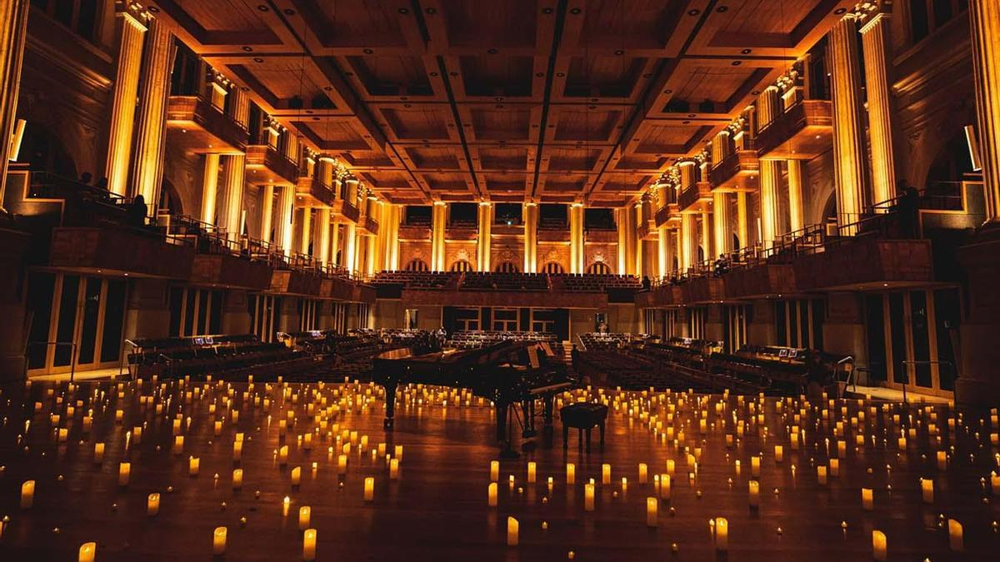

El otoño se hace paso con lluvias y días nublados en la capital española , por lo que es el momento de buscar planes en sitios cerrados, y no hay nada mejor que la música. Los conciertos bajo la luz de las velas siguen en Madrid y este fin de semana, del 27 al 29 de octubre ofrecen diversas experiencias que no deberías perderte. Los candlelights son experiencias musicales únicas que combinan la música en vivo con una atmósfera íntima y acogedora, de ahí su nombre, a la luz de las velas. El repertorio de estos eventos es muy amplio ofreciendo desde música clásica y ópera hasta tributos a grandes cantantes y grupos de pop y rock.
Fecha y hora: Domingo 29 de octubre a las 17.00 y a las 18.30
Duración del concierto: 60 minutos aprox. (apertura de puertas 30 minutos antes, no se podrá acceder tras el inicio)
Puedes comprar los tickets aqui
Localización : Ateneo de Madrid
Fecha y hora: Domingo 29 de octubre a las 19.00
Duración del concierto: 60 minutos aprox. (apertura de puertas 30 minutos antes, no se podrá acceder tras el inicio)
Puedes comprar los tickets aqui
Localización : Ateneo de Madrid
Fecha y hora: Domingo 29 de octubre a las 21.00
Duración del concierto: 60 minutos aprox. (apertura de puertas 30 minutos antes, no se podrá acceder tras el inicio)
Puedes comprar los tickets aqui